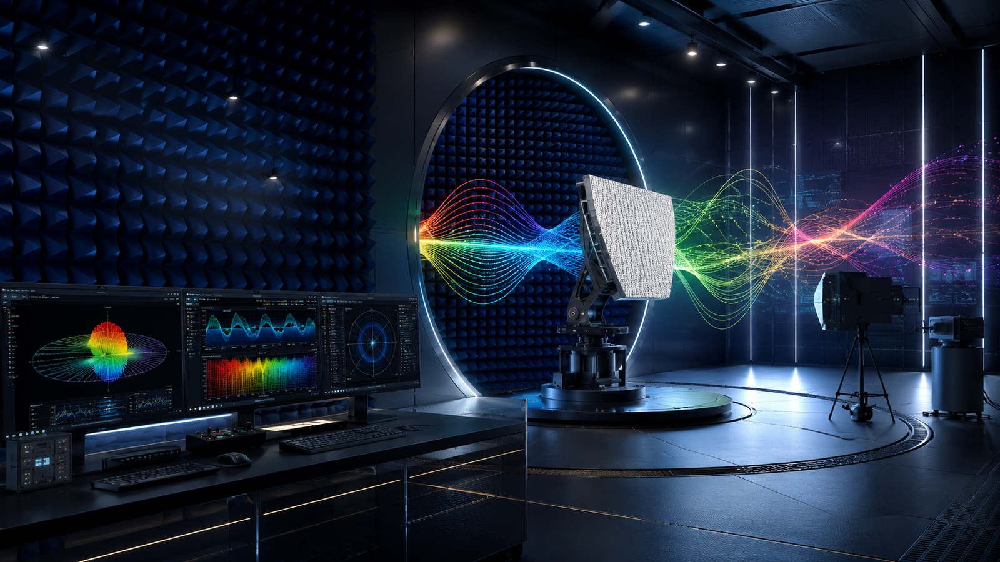

Find risk early
Identify mismatch, weak radiation, poor gain, nonlinear behavior, unstable measurements, and packaging problems before they become expensive.
RFSpectra helps startups, industry teams, and research partners measure, diagnose, and improve RF, microwave, mmWave, antenna, RIS, THz, and semiconductor systems.

RF products often fail late because the antenna, amplifier, package, board layout, material stack, or test setup was not validated early. RFSpectra turns technical uncertainty into clear next steps.
Identify mismatch, weak radiation, poor gain, nonlinear behavior, unstable measurements, and packaging problems before they become expensive.
Receive plots, measured results, interpretation, and prioritized recommendations your engineering and leadership teams can act on.
Use a focused technical partner before certification, customer demonstration, proposal submission, or production decisions.
RFSpectra supports the next class of RF systems: reconfigurable intelligent surfaces, smart beam control, connected devices, and measurement-driven design decisions.
Use this visual identity to communicate that the business is not a conventional testing shop. It is a high-frequency product validation and applied electromagnetic diagnostics partner.
For early designs, proposals, and troubleshooting plans.
For antennas, wireless devices, RIS prototypes, and high-frequency systems.
For prototypes not meeting range, efficiency, linearity, or measurement expectations.
Send a brief description of your device or system, the frequency range, current challenge, and the decision you need to make.